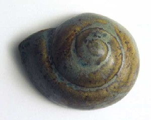
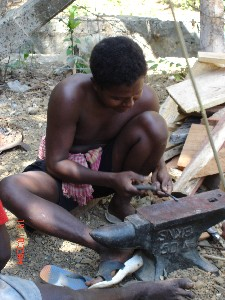

S - s
šɑlɖuo शाल्डूओ MORPH: šɑl-ɖuo. N सं. rising tide; उठती लहर. SD: natural environment, प्राकृतिक वातावरण.
šɑlʈɛrkʰole शालटैरखोले MORPH: šɑl-ʈɛr-kʰole. N सं. foam, of tide; लहर के झाग. SD: natural environment, प्राकृतिक वातावरण.
sɑre1 सारे N सं. knee-deep waters; घुटनों तक पानी. SD: natural environment, प्राकृतिक वातावरण. SEE: sɑre2 ‘saline water’ ‘समुद्र का खारा पानी सारेhm:{2}’; sɑre3 ‘salt’ ‘नमक सारेhm:{3}’; sɑre4 ‘sea’ ‘समुद्र सारेhm:{4}’.
|
 sɑre2 सारे N सं. saline water; समुद्र का खारा पानी. SD: natural environment, प्राकृतिक वातावरण. NT: Bathing in sea water to cure skin allergy. चर्म रोग के लिए समुद्री पानी में नहाना ठीक माना जाता है।. SEE: sɑre1 ‘knee-deep waters’ ‘घुटनों तक पानी सारेhm:{1}’; sɑre3 ‘salt’ ‘नमक सारेhm:{3}’; sɑre4 ‘sea’ ‘समुद्र सारेhm:{4}’.
sɑre2 सारे N सं. saline water; समुद्र का खारा पानी. SD: natural environment, प्राकृतिक वातावरण. NT: Bathing in sea water to cure skin allergy. चर्म रोग के लिए समुद्री पानी में नहाना ठीक माना जाता है।. SEE: sɑre1 ‘knee-deep waters’ ‘घुटनों तक पानी सारेhm:{1}’; sɑre3 ‘salt’ ‘नमक सारेhm:{3}’; sɑre4 ‘sea’ ‘समुद्र सारेhm:{4}’.
 sɑre3 सारे N सं. salt; नमक. SD: cooking & food, खाना-पीना. SEE: sɑre1 ‘knee-deep waters’ ‘घुटनों तक पानी सारेhm:{1}’; sɑre2 ‘saline water’ ‘समुद्र का खारा पानी सारेhm:{2}’; sɑre4 ‘sea’ ‘समुद्र सारेhm:{4}’.
sɑre3 सारे N सं. salt; नमक. SD: cooking & food, खाना-पीना. SEE: sɑre1 ‘knee-deep waters’ ‘घुटनों तक पानी सारेhm:{1}’; sɑre2 ‘saline water’ ‘समुद्र का खारा पानी सारेhm:{2}’; sɑre4 ‘sea’ ‘समुद्र सारेhm:{4}’.
 |
 sɑre4 सारे N सं. sea; समुद्र.
sɑre4 सारे N सं. sea; समुद्र.  kʰɑ me sɑre ole खा मे सारे ओले. Let’s go to watch the sea. चलो, हम समुद्र देखने चलें।. SD: natural environment, प्राकृतिक वातावरण. SEE: sɑre1 ‘knee-deep waters’ ‘घुटनों तक पानी सारेhm:{1}’; sɑre2 ‘saline water’ ‘समुद्र का खारा पानी सारेhm:{2}’; sɑre3 ‘salt’ ‘नमक सारेhm:{3}’.
kʰɑ me sɑre ole खा मे सारे ओले. Let’s go to watch the sea. चलो, हम समुद्र देखने चलें।. SD: natural environment, प्राकृतिक वातावरण. SEE: sɑre1 ‘knee-deep waters’ ‘घुटनों तक पानी सारेhm:{1}’; sɑre2 ‘saline water’ ‘समुद्र का खारा पानी सारेhm:{2}’; sɑre3 ‘salt’ ‘नमक सारेhm:{3}’.
 sɑrebekɑncɑyɑmo सारेबेकानचायामो MORPH: sɑre-bekɑn-cɑyɑmo. N सं. low tide; भाटा.
sɑrebekɑncɑyɑmo सारेबेकानचायामो MORPH: sɑre-bekɑn-cɑyɑmo. N सं. low tide; भाटा.  sɑre bekɑn cɑyɑmo kɛo bituŋ cɔŋɔm सारे बेकान चायामो कैओ बीतूङ चौङौम. Had there been a low tide, you would have had a good catch of crabs. अगर भाटा आता तो तुम्हें काफी केकड़े मिलते।. SD: natural environment, प्राकृतिक वातावरण.
sɑre bekɑn cɑyɑmo kɛo bituŋ cɔŋɔm सारे बेकान चायामो कैओ बीतूङ चौङौम. Had there been a low tide, you would have had a good catch of crabs. अगर भाटा आता तो तुम्हें काफी केकड़े मिलते।. SD: natural environment, प्राकृतिक वातावरण.
sɑrebepʰeʈ सारेबेफेट MORPH: sɑre-be-pʰeʈ. N सं. huge wave, also used for high tide; विशाल लहर, ज्वार. SD: natural environment, प्राकृतिक वातावरण, marine, समुद्री.
sɑrejio सारेजीओ MORPH: sɑre-jio. VAR: šɑre-jeo शारेजेओ; ijiɔ ईजीऔ. V क्रि. decrease of water level; low tide; पानी उतरना; भाटा.  sɑre bi jioɑmo teyo bituŋ cɔŋɔm सारे बी जीओआमो तेयो बीतूङ चौङौम. If the water went down, you would have had a good catch of lizards. अगर पानी उतरता तो तुम्हें छिपकलियां मिलतीं।.
sɑre bi jioɑmo teyo bituŋ cɔŋɔm सारे बी जीओआमो तेयो बीतूङ चौङौम. If the water went down, you would have had a good catch of lizards. अगर पानी उतरता तो तुम्हें छिपकलियां मिलतीं।.
 |
sɑremur सारेमूर MORPH: wɑre-mur. N सं. sea foam; समुद्र का झाग. SD: natural environment, प्राकृतिक वातावरण.
sɑrepʰɑlɖuo सारेफाल्डूओ MORPH: sɑre-pʰɑl-ɖuo. VAR: fɑːl-ɖuo फाऽल्डूओ. N सं. sea wave; समुद्र की लहर. SD: natural environment, प्राकृतिक वातावरण, marine, समुद्री.
 sɑrepʰile सारेफीले MORPH: sɑre-pʰile. VAR: šɑre-ɸile शारे-फीले; sɑrepʰile सारेफीले; sɑre-pʰile सारेफीले. V क्रि. tide; high tide; tsunami; पानी चढ़ना; ज्वार; सूनामी.
sɑrepʰile सारेफीले MORPH: sɑre-pʰile. VAR: šɑre-ɸile शारे-फीले; sɑrepʰile सारेफीले; sɑre-pʰile सारेफीले. V क्रि. tide; high tide; tsunami; पानी चढ़ना; ज्वार; सूनामी.
sɑretɑcɑe सारेताचाए MORPH: sɑre-tɑcɑe. N सं. rise and ebb of the tide at half moon; पानी का चढ़ाव व उतराव, जब आधा चांद हो. SD: natural environment, प्राकृतिक वातावरण.
sɑretɑcɑi सारेताचाई MORPH: sɑre-tɑ-cɑi. N सं. calm sea; शांत पानी. SD: natural environment, प्राकृतिक वातावरण.
sɑretɑrɑcɔr सारेताराचौर MORPH: sɑre-tɑrɑ-cɔr. VAR: šɑre-tɑrɑ-cɔr शारेताराचौर. N सं. wave; flow of water; लहर; जल का बहाव. SD: natural environment, प्राकृतिक वातावरण, marine, समुद्री.
sɑretɛcɑe सारेतैचाए MORPH: sɑre-tɛcɑe. N सं. accumulated water; भरा पानी. SD: natural environment, प्राकृतिक वातावरण.
sɑretisoteo सारेतीसोतेओ MORPH: sɑre-tiso-teo. N सं. crocodile, salt water; खारे पानी का मगरमच्छ. SD: reptile, रेंगने वाले जंतु.
šeke शेके INTJ वि बो. oh! my God!; बाप रे! SD: emotion, भावनात्मक.
sɛmpe सैम्पे N सं. friend; दोस्त. SD: relationship, सम्बंध.
šiɖ शीड VAR: šiːɖ शीऽड; šiʈ शीट. V क्रि. hunt; शिकार करना. šiɖ-be शीडबे. Go for hunting. शिकार करने जाओ।.  nu šiʈbi ɑo-o नू शीटबी आओओ. The hunters are coming back from the jungle. शिकारी जंगल से वापस आ रहे हैं।.
nu šiʈbi ɑo-o नू शीटबी आओओ. The hunters are coming back from the jungle. शिकारी जंगल से वापस आ रहे हैं।.
 |
sik सीक VAR: šik शीक. N सं. dog-faced water snake; कुत्तेनुमा मुंह वाला जलीय सांप. SD: reptile, रेंगने वाले जंतु.
šikototec शीकोतोतेच MORPH: šikoto-tec. VAR: šikoto-tɛc शिकोतोतैच. N सं. leaf of the Mahua; महुआ का पत्ता. Bassia latifolia. SD: flora, फूल-पत्ती. NT: Because of their large size, women use these leaves to cover their private parts. बड़े आकार के कारण इस पत्ते से स्त्रियां अपने गुप्त अंगों को ढकती हैं।.
 |
šikotoʈoŋ शिकोतोटोङ MORPH: šikoto-ʈoŋ. N सं. Mahua tree; महुआ पेड़. Bassia latifolia. SD: flora, फूल-पत्ती.
|
 sikɔto सीकौतो VAR: sikoto सीकोतो; šikoto शीकोतो. N सं. a kind of tree; महुआ का पेड़. Bassia latifolia. SD: flora, फूल-पत्ती.
sikɔto सीकौतो VAR: sikoto सीकोतो; šikoto शीकोतो. N सं. a kind of tree; महुआ का पेड़. Bassia latifolia. SD: flora, फूल-पत्ती.
 |
sikɔtɔtɑrɑbuco सीकौतौताराबूचो MORPH: sikɔtɔ-tɑrɑ-buco. N सं. roots of the Mahua tree; महुआ पेड़ की जड़ें. Bassia latifolia. SD: flora, फूल-पत्ती.
 |
šikpʰe शीकफे MORPH: šik-pʰe. N सं. a kind of water snake; Keelback; एक प्रकार का पानी का सांप. Xenochropis. SD: reptile, रेंगने वाले जंतु.
šimi शीमी N सं. mangrove tree with broad leaves; चौड़े पत्तों वाला खाड़ी पेड़. SD: flora, फूल-पत्ती.
simiɑpsu सीमीआपसू Etym: Pujjukar; पुज्जूकर. N सं. islet; ठीकरी; छोटा द्वीप. SD: natural environment, प्राकृतिक वातावरण.
šimu शीमू VAR: cʰime छीमे; simu सीमू. V क्रि. soak; सोखना. cɑʈɑle bi simuʈʰi चाटाले बी सीमूठी. Soak the red palm fruit. लाल ताड़ फल को भिगोओ।.
siŋi सीङी N सं. deep breath; गहरी सांस. ʈʰu siŋi tɑrɑ lobu ठू सीङी तारा लोबू. I take a deep breath. मैं लम्बी सांस लेता हूं।. SD: life, जीवन.
siŋo सीङो V क्रि. sob; सिसकना.  ɑkɑmɑy kɑ siŋokom आकामाय का सीङोकोम. He sobs with the memory of his father. वह अपने पिता की याद में सुबकता है।.
ɑkɑmɑy kɑ siŋokom आकामाय का सीङोकोम. He sobs with the memory of his father. वह अपने पिता की याद में सुबकता है।.
 |
 širbele शीरबेले VAR: šir-belle शीरबेल्ले. N सं. a type of jewellery tied around the waist; waistband; कमर पर पहना जाने वाला आभूषण; कमरबंद. SD: costume & adornment, आभूषण एवं श्रृंगार.
širbele शीरबेले VAR: šir-belle शीरबेल्ले. N सं. a type of jewellery tied around the waist; waistband; कमर पर पहना जाने वाला आभूषण; कमरबंद. SD: costume & adornment, आभूषण एवं श्रृंगार.
 |
širbelebɑno शीरबेलेबानो MORPH: širbele-bɑno. V क्रि. knit a waistband; कमरबंद बुनना या बनाना.
širik शीरीक N सं. a kind of tree; एक प्रकार का पेड़. SD: flora, फूल-पत्ती. NT: The bark of this tree is used for making jungle wine. जंगली शराब बनाने के काम में आने वाली छाल।.
 sirikliʈɔro सीरीक्लीटौरो MORPH: sirikli-ʈɔro. N सं. Leatherback turtle; लैदर बैक कछुआ. SD: marine, समुद्री. NT: A type of red-headed big turtle. It is the world’s largest turtle, weighing up to 900 kg. लाल सिर वाला संसार का सबसे भीमकाय कछुआ जिसका वज़न 900 किलोग्राम तक हो सकता है।.
sirikliʈɔro सीरीक्लीटौरो MORPH: sirikli-ʈɔro. N सं. Leatherback turtle; लैदर बैक कछुआ. SD: marine, समुद्री. NT: A type of red-headed big turtle. It is the world’s largest turtle, weighing up to 900 kg. लाल सिर वाला संसार का सबसे भीमकाय कछुआ जिसका वज़न 900 किलोग्राम तक हो सकता है।.
širime शीरीमे V-REFL निज क्रि. wash myself; ख़ुद को धोना.
širmuʈɔymo शीरमूटौयमो MORPH: širmu-ʈɔymo. N सं. a green insect that walks slowly and looks like wood; लकड़ी की तरह प्रतीत होने वाला हरे रंग का कीड़ा जो बहुत धीरे-धीरे रेंगता है. SD: insect & invertebrate, कीट-पतंग एवं अरीढ़ जीव.
siro सीरो VAR: siroː सीरोऽ; ciroː चीरोऽ. N सं. sea; deep sea; सागर; समुद्र; गहरा समुद्र. SD: natural environment, प्राकृतिक वातावरण.
širo शीरो DEIXIS डीक्सीस. start of open sea/ ocean; खुले समुद्र/ महासागर की शुरुआत. SD: natural environment, प्राकृतिक वातावरण.
širo pʰoʈoŋ शीरो फोटोङ N सं. Bedni fish (big); बड़ी बेदनी मछली. SD: fish, मछली.
širobercɛnɔyɑm शीरोबेरचैनौयाम MORPH: širo-ber-cɛnɔyɑm. N सं. stench of the sea; समुद्र की बास. SD: attribute, विशेषता. NT: This stench is supposed to arise when someone drowns in the sea. किसी जन्तु के मरने के बाद पैदा होने वाली समुद्री दुर्गंध।.
sirobun सीरोबून MORPH: sirobun. N सं. shark, big; बड़ी शार्क मछली. SD: fish, मछली.
 širocɛrel शीरोचैरेल ADJ वि. colour of the sea; sea green; समुद्र का रंग. SD: attribute, विशेषता.
širocɛrel शीरोचैरेल ADJ वि. colour of the sea; sea green; समुद्र का रंग. SD: attribute, विशेषता.
 |
 širokɑteo शीरोकातेओ MORPH: širo-kɑ-teo. VAR: širotisoteo शीरोतीसोतेओ; sɑre-kɑ-teo सारेकातेओ; sɑre-kɑ-teyo सारेकातेयो. N सं. deep sea crocodile, lit. lizard of sea; गहरे समुद्र का मगरमच्छ, शाब्दिक अर्थः समुद्र की छिपकली. SD: reptile, रेंगने वाले जंतु.
širokɑteo शीरोकातेओ MORPH: širo-kɑ-teo. VAR: širotisoteo शीरोतीसोतेओ; sɑre-kɑ-teo सारेकातेओ; sɑre-kɑ-teyo सारेकातेयो. N सं. deep sea crocodile, lit. lizard of sea; गहरे समुद्र का मगरमच्छ, शाब्दिक अर्थः समुद्र की छिपकली. SD: reptile, रेंगने वाले जंतु.
 sirokorobito सीरोकोरोबीतो MORPH: siro-koro-bito. N सं. a long sea-worm; एक प्रकार का लम्बा समुद्री कीड़ा. SD: marine, समुद्री.
sirokorobito सीरोकोरोबीतो MORPH: siro-koro-bito. N सं. a long sea-worm; एक प्रकार का लम्बा समुद्री कीड़ा. SD: marine, समुद्री.
širolim शीरोलीम MORPH: širo-lim. N सं. peaceful sea; शांत समुद्र. SD: natural environment, प्राकृतिक वातावरण.
 široliu शीरोलीऊ MORPH: širo-liu. Etym: Bo. ADJ वि. cold; ठंडा.
široliu शीरोलीऊ MORPH: širo-liu. Etym: Bo. ADJ वि. cold; ठंडा.
N सं. calm sea; शांत समुद्र. SD: attribute, विशेषता.
 široterlikʰui शीरोतेरलीखूई MORPH: širo-ter-likʰui. VAR: široterlukʰu शीरोतेरलूखू. N सं. deep sea; गहरा सागर. SD: natural environment, प्राकृतिक वातावरण.
široterlikʰui शीरोतेरलीखूई MORPH: širo-ter-likʰui. VAR: široterlukʰu शीरोतेरलूखू. N सं. deep sea; गहरा सागर. SD: natural environment, प्राकृतिक वातावरण.
širotertɛk शीरोतेरतैक MORPH: širo-ter-tɛk. VAR: siro-tɛr-tɛk सीरोतैरतैक. DEIXIS डीक्सीस. away from the coast; centre of the sea; तट से दूर; समुद्र के बीचोबीच. SD: space, अन्तरिक्ष.
 |
sirotɛrbecbemu सीरोतैरबेचबेमू MORPH: siro-tɛr-bec-bemu. N सं. ocean butterfly; समुद्री तितली. SD: insect & invertebrate, कीट-पतंग एवं अरीढ़ जीव.
 širotɛrkerɑ शिरोतैरकेरा MORPH: širo-tɛr-kerɑ. N सं. shallow sea; कम पानी वाला या उथला सागर. SD: natural environment, प्राकृतिक वातावरण.
širotɛrkerɑ शिरोतैरकेरा MORPH: širo-tɛr-kerɑ. N सं. shallow sea; कम पानी वाला या उथला सागर. SD: natural environment, प्राकृतिक वातावरण.
širototpʰolɲo शीरोतोत्फोल्ञो MORPH: širo-tot-pʰol-ɲo. N सं. coast dwellers; समुद्र के किनारे रहने वाले. SD: people, लोग.
širototpʰolo शीरोतोत्फोलो MORPH: širo-tot-pʰolo. N सं. sea-coast dweller; समुद्रतट पर रहने वाला. SD: people, लोग.
širototpʰolokɑɲo शीरोतोत्फोलोकाञो MORPH: širo-tot-pʰol-okɑ-ɲo. N सं. coastal people’s home; समुद्र के किनारे के लोगों के घर. SD: habitat, रहन-सहन.
široʈɑrɑcerɛl शीरोटाराचेरैल MORPH: širo-ʈɑrɑ-cerɛl. N सं. open sea; green sea; खुला समुद्र; हरा सागर. SD: natural environment, प्राकृतिक वातावरण.
široʈʰɛt शीरोठैत N सं. a kind of sea fish that looks like Surmai fish; समुद्री मछली जो सुरमई मछली सी दिखती है. SD: fish, मछली.
 |
široʈɔp शीरोटौप N सं. seasnail; समुद्री घोंघा. SD: marine, समुद्री.
 |
širubikɑ शीरूबीका MORPH: širu-bikɑ. DEIXIS डीक्सीस. by the sea; on the coast; समुद्र तट के पास. SD: space, अन्तरिक्ष.
 širuroʈo शीरूरोटो MORPH: širu-roʈo. VAR: šire-rɔʈo शीरे रौतो. N सं. flying fish; उड़ने वाली मछली. SD: fish, मछली.
širuroʈo शीरूरोटो MORPH: širu-roʈo. VAR: šire-rɔʈo शीरे रौतो. N सं. flying fish; उड़ने वाली मछली. SD: fish, मछली.
šit शीत N सं. digging rod; कुदाल. minošit मीनोशीत. potato digging rod. आलू खोदने वाली कुदाल. kɔʈ-šit कौटशीत. digging rod used for soil. मिट्टी खोदने वाली कुदाल. ʈʰi-šit ठीशीत. spade. ज़मीन खोदने वाली कुदाल. SD: tool, औज़ार.
šitɑne शीताने VAR: šitɑni शीतानी. WH-Q प्रश्न. how; कैसे.  šitɑn ŋyo be शीतान ङयो बे. How are you? आप कैसे हैं? ŋu šitɑni cɛlecɛcmot lukʰuibit pʰɛne ङू शीतानी चैलेचैच्मोत लूखूईबीत फैने. How will you jump over these high bushes? तुम कैसे इन ऊंची-ऊंची झाड़ियों को कूदोगी? SD: interrogative, प्रश्नवाचक.
šitɑn ŋyo be शीतान ङयो बे. How are you? आप कैसे हैं? ŋu šitɑni cɛlecɛcmot lukʰuibit pʰɛne ङू शीतानी चैलेचैच्मोत लूखूईबीत फैने. How will you jump over these high bushes? तुम कैसे इन ऊंची-ऊंची झाड़ियों को कूदोगी? SD: interrogative, प्रश्नवाचक.
 |
sito सीतो V क्रि. sharpen; नुकीला करना.
šiʈbom शिटबोम VAR: cʰiʈbo छिट्बो. N सं. hunt; शिकार. SD: hunting & gathering, शिकार एवं संचय सम्बंधी.
 sobo सोबो VAR: ešɔbo एशौबो. N सं. foul smell; bad smell; stench; दुर्गंध. SD: attribute, विशेषता.
sobo सोबो VAR: ešɔbo एशौबो. N सं. foul smell; bad smell; stench; दुर्गंध. SD: attribute, विशेषता.
 soɖimu सोडीमू N सं. a variety of sea frog; एक प्रकार का समुद्री मेंढक. SD: animal, जानवर.
soɖimu सोडीमू N सं. a variety of sea frog; एक प्रकार का समुद्री मेंढक. SD: animal, जानवर.
soe सोए N सं. a kind of sweet-sour fruit that tastes like an apple; खट्टा-मीठा फल जो खाने में सेब जैसा होता है. SD: edible fruit, खाद्य फल.
 |
soɛtɛc सोऐतैच MORPH: soɛ-tɛc. VAR: sweː-tec स्वेऽतेच; soi-tɛc सोईतैच; soːyɑtec सोऽयातेच. N सं. sui leaf; सूई पत्ता. SD: flora, फूल-पत्ती. NT: Used for making mats and cooking turtle. The tree bears brown fruits. सूई पत्ता चटाई बनाने और कछुआ पकाने में उपयुक्त होता है। सूई के पेड़ में भूरे रंग के फल लगते हैं।.
šol शोल V क्रि. crawl, like a lizard; छिपकली की तरह रेंगना.
 solo सोलो VAR: šolo शोलो. V क्रि. walk; hang; चलना; टांगना. ʈʰu ʈʰi-bik šolo om ठू ठीबीक शोलो ओम. I walk on the ground. मैं ज़मीन पर चलता हूं।.
solo सोलो VAR: šolo शोलो. V क्रि. walk; hang; चलना; टांगना. ʈʰu ʈʰi-bik šolo om ठू ठीबीक शोलो ओम. I walk on the ground. मैं ज़मीन पर चलता हूं।.  šolo-be शोलोबे. Walk. चलो।.
šolo-be शोलोबे. Walk. चलो।.
šomu शोमू V क्रि. wait; halt; pause; इंतज़ार करना; रुकना; अल्पविराम के लिये रुकना. šomu-i-jim शोमूईजीम. Do not eat immediately (from a plate or any dish). तुरन्त मत खाओ (किसी तश्तरी से या कोई पकवान)।.
soŋo1 सोङो VAR: šoŋo शोङो; soŋɔl सोङौल. N सं. heaven; स्वर्ग. SD: mythology, पौराणिक. SEE: soŋo2 ‘high’ ‘ऊंचा सोङोhm:{2}’.
soŋo2 सोङो VAR: šoŋo शोङो; soŋɔl सोङौल. ADJ वि. high; ऊंचा. SD: attribute, विशेषता. SEE: soŋo1 ‘heaven’ ‘स्वर्ग सोङोhm:{1}’.
šoŋol शोङोल MORPH: šoŋo-l. VAR: suɲul सूञूल; soːŋŋɔl सोऽङ्ङौल; soŋo सोङो. DEIXIS डीक्सीस. up; above (without contact, distant); ऊपर (दूर). ʈʰot ɲo tot šoŋol kʰider ʈɔŋ ठोत ञो तोत शोङोल खीदेर टौङ. There is a coconut tree above my house (on the hill). मेरे घर के ऊपर एक नारियल का पेड़ है (पहाड़ी के ऊपर) ।. SD: space, अन्तरिक्ष.
 šop शोप N सं. a kind of fish which is a bigger version of the Grouper fish; एक प्रकार की मछली जो फाराङ मछली का बड़ा रूप होती है. SD: fish, मछली.
šop शोप N सं. a kind of fish which is a bigger version of the Grouper fish; एक प्रकार की मछली जो फाराङ मछली का बड़ा रूप होती है. SD: fish, मछली.
sorobul1 सोरोबूल N सं. enemy; दुश्मन. SD: relationship, सम्बंध. SEE: sorobul2 ‘Jarawa areas near Bluff Island’ ‘जारवा क्षेत्र ब्लफ़ द्वीप के पास सोरोबूलhm:{2}’.
sorobul2 सोरोबूल N सं. Jarawa areas near Bluff Island; ब्लफ़ द्वीप के पास का जारवा क्षेत्र. SD: habitat, रहन-सहन. SEE: sorobul1 ‘enemy’ ‘दुश्मन सोरोबूलhm:{1}’.
šorokom शोंरोकोम MORPH: šoro-k-om. V क्रि. kill, with an arrow; मारना तीर से.
 soye सोये VAR: soeʈɔŋ सोएटौङ. N सं. sui tree; सूई पेड़. SD: flora, फूल-पत्ती. NT: The leaves of this tree are used as thatching. इसकी पत्तियां छप्पर बनाने में काम आती हैं।.
soye सोये VAR: soeʈɔŋ सोएटौङ. N सं. sui tree; सूई पेड़. SD: flora, फूल-पत्ती. NT: The leaves of this tree are used as thatching. इसकी पत्तियां छप्पर बनाने में काम आती हैं।.
šɔ शौ INTJ वि बो. no; नहीं. šɔ šɔ ʈʰuektʰemboyɑ शौशौ ठूएक्थेम्बोया. No, no I am going to marry her. नहीं, नहीं मैं उससे शादी करूंगा।. SD: grammar, व्याकरण.
šɔr शौर VAR: sɔr सौर; esorɛːkke एसोरैऽकके. V क्रि. sing; गाना. jo-be šoroke जो-बे शोरोके. Sing a song. गाना गाइये।.
 |
 šubi शूबी VAR: subi सूबी. N सं. a kind of snake; एक प्रकार का सांप. SD: reptile, रेंगने वाले जंतु.
šubi शूबी VAR: subi सूबी. N सं. a kind of snake; एक प्रकार का सांप. SD: reptile, रेंगने वाले जंतु.
suke सूके Etym: Hindi; हिन्दी. V क्रि. dry; सूखना; सुखाना.
šuke शूके Etym: Hindi; हिन्दी. N सं. tobacco; तंबाकू. SD: edible item, खाद्य सामग्री.
šuliɑ शूलीया N सं. tidal foam; ज्वार-भाटे का झाग. SD: natural environment, प्राकृतिक वातावरण.
sulu1 सूलू N सं. follower; अनुसरण करने वाला. SD: people, लोग. SEE: sulu2 ‘follower’ ‘अनुसरण करने वाला सूलूhm:{2}’; sulu3 ‘fruit’ ‘फल सूलूhm:{3}’.
sulu2 सूलू ADJ वि. follower; अनुसरण करने वाला. SD: people, लोग. SEE: sulu1 ‘follower’ ‘अनुसरण करने वाला सूलूhm:{1}’; sulu3 ‘fruit’ ‘फल सूलूhm:{3}’.
sulu3 सूलू N सं. Pandanus fruit; केवड़ा फल. SD: edible fruit, खाद्य फल. SEE: sulu1 ‘younger one’ ‘अनुसरण करने वाला सूलूhm:{1}’; sulu2 ‘younger one’ ‘अनुसरण करने वाला सूलूhm:{2}’.
sulutʰu सूलूथू MORPH: sulu-tʰu. N सं. younger one, lit. one who is born after; अनुज, शाब्दिक अर्थः जिसका जन्म बाद में हुआ हो. SD: kin term, सम्बंधी वाचक शब्दावली.
sunekom सूनेकोम MORPH: sune-kom. V क्रि. clear the nose; नाक साफ़ करना.
suŋo सूङो ADV क्रि वि. upstairs; ऊपरी मंजिल. SD: space, अन्तरिक्ष.
šuɲe शूञे VAR: cuɲe चूञे. V क्रि. running of nose; नाक बहना. o-i-šuine-k-em ओईशूईनेकेम. His nose is running. उसकी नाक बह रही है।. ʈʰui-šuŋe-bɔm ठूईशूङेबौम. My nose is running. मेरी नाक बह रही है।. SEE: oinšiŋ ‘pant’ ‘हांफना ओईन्शीङ ’; totšiŋe ‘breathe’ ‘सांस लेना तोतशीङे ’.
šuɲebe शूञेबे V क्रि. sneeze; छींकना. SEE: totšiŋe ‘breathe’ ‘सांस लेना तोतशीङे ’.
 šup शूप VAR: sup सूप; suːp सूऽप. N सं. basket; bucket; टोकरी; बालटी. SD: household, घरेलू. NT: Cane basket used to carry potatoes. बेंत की टोकरी जिसमें आलू आदि रखे जाते हैं।.
šup शूप VAR: sup सूप; suːp सूऽप. N सं. basket; bucket; टोकरी; बालटी. SD: household, घरेलू. NT: Cane basket used to carry potatoes. बेंत की टोकरी जिसमें आलू आदि रखे जाते हैं।.
supirno सूपीरनो MORPH: supir-no. V क्रि. make basket; टोकरी बनाना.
surme1 सूरमे ADJ वि. good; अच्छा. SD: attribute, विशेषता. SEE: surme2 ‘one who has a good voice’ ‘अच्छी आवाज़ वाला सूरमेhm:{2}’.
surme2 सूरमे N सं. one who has a good voice; अच्छी आवाज़ वाला. SD: people, लोग. SEE: surme1 ‘good’ ‘अच्छा सूरमेhm:{1}’.
suʈʰɑro सूठारो N सं. a kind of green sea turtle, male; एक प्रकार का हरा समुद्री नर कछुआ. SD: marine, समुद्री.
 |
šyuɖimu श्यूडीमू N सं. Mudskipper; एक प्रकार की मछली. SD: fish, मछली.